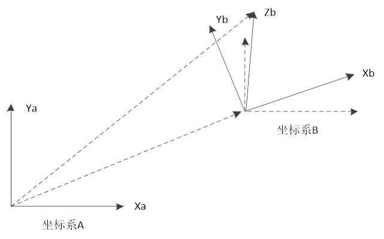

|
类型 |
机械手计算指令 |
|
描述 |
用于对工件坐标系进行平移和旋转。
目前只对FRAME6同时旋转姿态，其他具有XYZ虚拟轴的可以支持XYZ三个轴旋转，姿态轴不能旋转。 旋转后，虚拟轴WORLD_DPOS表示世界坐标不会改变，虚拟轴DPOS表示工件坐标会改变。 使用时需控制器当前存在机械链接。
BASE轴可以是虚拟轴与关节轴任意一个；BASE轴无机械手链接时会报1025的错误。 多种机械手叠加的情况，根据BASE轴来识别是哪个机械手模式；如果BASE（axis_1,axis_2）中的axis_1是模式1的机械手轴，axis_2是模式2的机械手轴，那么结果是模式1的机械手进行坐标计算，即以BASE轴的顺序来计算。 |
|
语法 |
FRAME_ROTATE(X,Y,Z,RX,RY,RZ) X：坐标系B沿X^的平移距离 Y：坐标系B沿Y^的平移距离 Z：坐标系B沿Z^的平移距离 RX：坐标系B沿X^的旋转的弧度 RY：坐标系B沿Y^的旋转的弧度 RZ：坐标系B沿Z^的旋转的弧度  坐标系旋转： 旋转的方法是：x_y_z固定角坐标系。 首先将做坐标系{B}和一个已知参考坐标系{A}重合。先将{A}绕Xa旋转RX角，在绕Ya旋转RY角，最后绕Za旋转RZ角。 |
|
适用控制器 |
通用 |
|
例程 |
例一 以FRAME=2，DETLA为例，对其绕X轴旋转90度。 BASE(0,1,2) RAPIDSTOP ATYPE = 1,1,1 UNITS=3600/360,3600/360,3600/360 DPOS=0,0,0 BASE(6,7,8) ATYPE = 0,0,0 TABLE(0,40,10,32,85,3600,3600,3600, 0, 0, 0 ) UNITS = 100,100,100 BASE(0,1,2) CONNFRAME(2,0,6,7,8) WAIT LOADED BASE(6,7,8) FRAME_ROTATE(0,0,0,PI/2,0,0) ?"DPOS(7)-WORLD_DPOS(7)=",DPOS(7)-WORLD_DPOS(7) ?"DPOS(8)-WORLD_DPOS(8)=",DPOS(8)-WORLD_DPOS(8)
输出行输出结果： DPOS(7)-WORLD_DPOS(7)=-58.1400 DPOS(8)-WORLD_DPOS(8)=58.1400
例二 以FRAME=1，SCARA为例；对其相对于Z轴旋转90度。 BASE(0,1,2,3) RAPIDSTOP ATYPE = 1,1,1,1 UNITS=3600/360,3600/360,3600/360,1000 DPOS=0,0,0,0 BASE(6,7,8,9) ATYPE = 0,0,0,0 TABLE(0,100,100,3600,3600,3600) UNITS = 100,100,3600/360,1000 BASE(0,1,2,3) CONNFRAME(1,0,6,7,8,9) WAIT LOADED BASE(6,7,8,9) FRAME_ROTATE(0,0,0,0,0,PI/2) ?"DPOS(7)-WORLD_DPOS(7)=",DPOS(7)-WORLD_DPOS(7) ?"DPOS(8)-WORLD_DPOS(8)=",DPOS(8)-WORLD_DPOS(8)
输出行输出结果： DPOS(7)-WORLD_DPOS(7)=-200 DPOS(8)-WORLD_DPOS(8)=0 |
|
相关指令 |